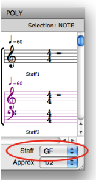
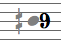

OpenMusic DocumentationHiérarchie de section : OM 6.6 User Manual > Score Objects > Score Editors > Score Display
OpenMusic DocumentationHiérarchie de section : OM 6.6 User Manual > Score Objects > Score Editors > Score Display
Navigation : page précédente | page suivante
Attention, votre navigateur ne supporte pas le javascript ou celui-ci à été désactivé. Certaines fonctionnalités de ce guide sont restreintes.
Score Display
Displaying Information
Pop Up Menus

The note editor menus and controls.Zoom
{kind=link}
Pop up menus are mainly used for modifying the score displaying and player options :
Font size– adjust the font size to your convenience.Use the Zoom to adjust the horizontal spacing of notes.
Staff– number of staves and G or F clefs.
Each scale has an adapted accidentals notation system. |
The 1/6 tone notation system.
|
Microintervals Notation
Editor Control Menu
The Editor Control
|

|
Staves Configuration
Non Polyphonic Objects
The staves configuration of notes , chords , chord-seqs and voices can be modified via a simple selection in the Staff pop up menu.
Polyphonic Objects

|
The staves configuration of polys and multi-seqs can be modified to the whole object's scale, or to selected items scale.
|
Editors Displaying Parameters
Multipe Staves Configurations in Polyphonic Objects

|
All score objects, but note objects, offer multiple staves configurations – These configurations do no allow single staff manipulation : staves form groups which cannot be splitted for edition purposes . |
Colour
Midi Channel
To change the note colour according to its midi channel, Press c |
 |
Note Colour
To change the colour of a note :
|

|
Références :
Plan :
Navigation : page précédente | page suivante
A propos...(c) Ircam - Centre Pompidou